Targets
| Target | Can | Cannot |
|---|---|---|
| egui | drag, events, focus, hover, key, mount, press, read, record, screenshot, trace, type | |
| javafx | drag, events, focus, hover, key, mount, press, read, record, screenshot, trace, type | |
| web | drag, events, focus, hover, key, mount, press, read, record, screenshot, trace, type |
ui.counter: starts at the start value
| Target | Status | Details |
|---|---|---|
| egui | pass | |
| javafx | pass | |
| web | pass |
Screenshots
egui ↔ javafx 16.2% · egui ↔ web 5.7% · javafx ↔ web 9.6% pass (all under 30%)
egui · 320×240 light 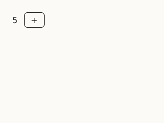
javafx · 320×240 light web · 320×240 light
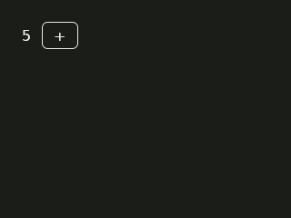
egui · 320×240 dark javafx · 320×240 dark web · 320×240 dark
| Pair | Pixels that differ | Result | Where |
|---|---|---|---|
| egui ↔ javafx | 16.2% (threshold 30%) | pass | |
| egui ↔ web | 5.7% (threshold 30%) | pass | 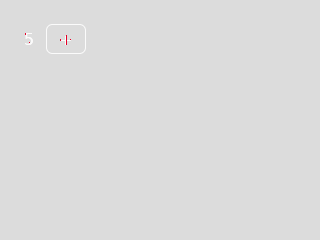 |
| javafx ↔ web | 9.6% (threshold 30%) | pass | 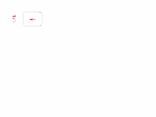 |
ui.counter: each press adds one
| Target | Status | Details |
|---|---|---|
| egui | pass | |
| javafx | pass | |
| web | pass |
Screenshots
egui ↔ javafx 26.3% · egui ↔ web 8.8% · javafx ↔ web 7.0% pass (all under 30%)
egui · 320×240 light javafx · 320×240 light web · 320×240 light
egui · 320×240 dark javafx · 320×240 dark web · 320×240 dark
| Pair | Pixels that differ | Result | Where |
|---|---|---|---|
| egui ↔ javafx | 26.3% (threshold 30%) | pass | 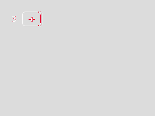 |
| egui ↔ web | 8.8% (threshold 30%) | pass | 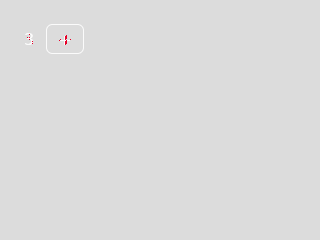 |
| javafx ↔ web | 7.0% (threshold 30%) | pass | 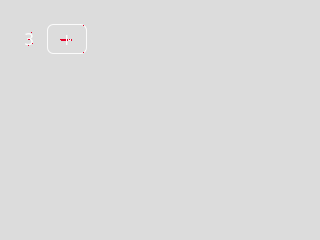 |
ui.counter: the keyboard works too
| Target | Status | Details |
|---|---|---|
| egui | pass | |
| javafx | pass | |
| web | pass |
ui.switch: starts off, with its label as its name
| Target | Status | Details |
|---|---|---|
| egui | pass | |
| javafx | pass | |
| web | pass |
Screenshots
egui ↔ javafx 6.7% · egui ↔ web 5.2% · javafx ↔ web 2.5% pass (all under 30%)
egui · 320×240 light 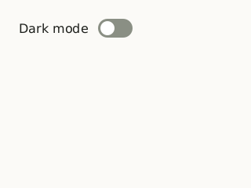
javafx · 320×240 light web · 320×240 light
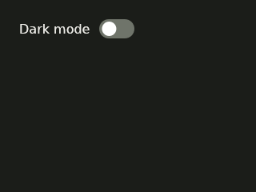
egui · 320×240 dark 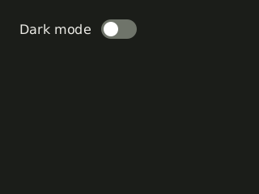
javafx · 320×240 dark web · 320×240 dark
| Pair | Pixels that differ | Result | Where |
|---|---|---|---|
| egui ↔ javafx | 6.7% (threshold 30%) | pass | 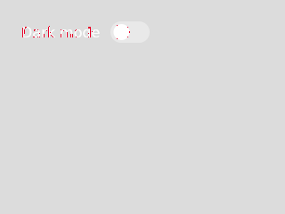 |
| egui ↔ web | 5.2% (threshold 30%) | pass | |
| javafx ↔ web | 2.5% (threshold 30%) | pass | 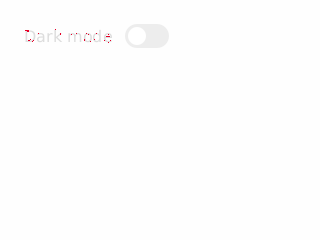 |
ui.switch: starts on when asked
| Target | Status | Details |
|---|---|---|
| egui | pass | |
| javafx | pass | |
| web | pass |
Screenshots
egui ↔ javafx 6.7% · egui ↔ web 5.2% · javafx ↔ web 3.5% pass (all under 30%)
egui · 320×240 light javafx · 320×240 light 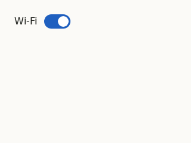
web · 320×240 light
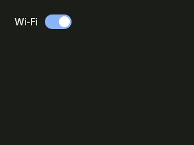
egui · 320×240 dark 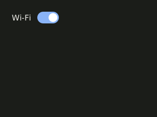
javafx · 320×240 dark web · 320×240 dark
| Pair | Pixels that differ | Result | Where |
|---|---|---|---|
| egui ↔ javafx | 6.7% (threshold 30%) | pass | 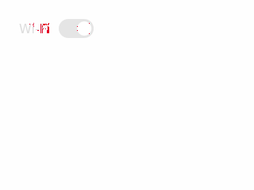 |
| egui ↔ web | 5.2% (threshold 30%) | pass | 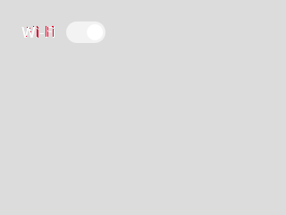 |
| javafx ↔ web | 3.5% (threshold 30%) | pass | 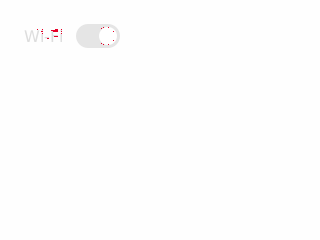 |
ui.switch: a press turns it on, and the thumb slides across
| Target | Status | Details |
|---|---|---|
| egui | pass | |
| javafx | pass | |
| web | pass |
Screenshots
egui ↔ javafx 6.3% · egui ↔ web 5.1% · javafx ↔ web 2.8% pass (all under 30%)
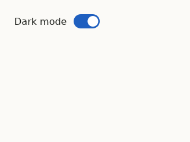
egui · 320×240 light javafx · 320×240 light web · 320×240 light
egui · 320×240 dark javafx · 320×240 dark 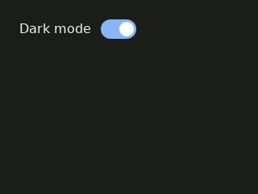
web · 320×240 dark
| Pair | Pixels that differ | Result | Where |
|---|---|---|---|
| egui ↔ javafx | 6.3% (threshold 30%) | pass | |
| egui ↔ web | 5.1% (threshold 30%) | pass | 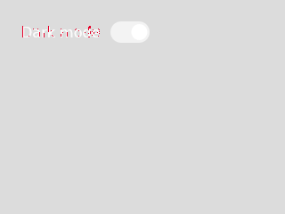 |
| javafx ↔ web | 2.8% (threshold 30%) | pass | 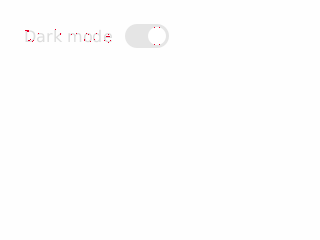 |
Motion
| Part | Compared | Difference | Result | Note |
|---|---|---|---|---|
| thumb | egui ↔ javafx | 0.1 ms (threshold 20 ms) | pass | largest at 70% of the movement |
| thumb | egui ↔ web | 0.0 ms (threshold 20 ms) | pass | largest at 10% of the movement |
| thumb | javafx ↔ web | 0.1 ms (threshold 20 ms) | pass | largest at 70% of the movement |
| thumb | egui vs timing | 0.2 ms (threshold 20 ms) | pass | against 200ms ease-out; largest at 80% of the movement |
| thumb | javafx vs timing | 0.1 ms (threshold 20 ms) | pass | against 200ms ease-out; largest at 80% of the movement |
| thumb | web vs timing | 0.2 ms (threshold 20 ms) | pass | against 200ms ease-out; largest at 80% of the movement |
Recorded clips
egui · egui/switch/a-press-turns-it-on-and-the-thumb-slides-across/clip.gif 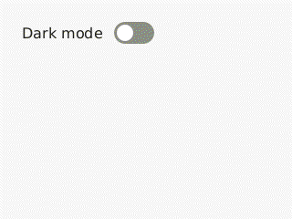
javafx · javafx/switch/a-press-turns-it-on-and-the-thumb-slides-across/clip.gif 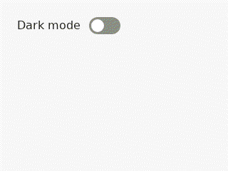
web · web/switch/a-press-turns-it-on-and-the-thumb-slides-across/clip.gif
ui.switch: Space toggles it from the keyboard
| Target | Status | Details |
|---|---|---|
| egui | pass | |
| javafx | pass | |
| web | pass |